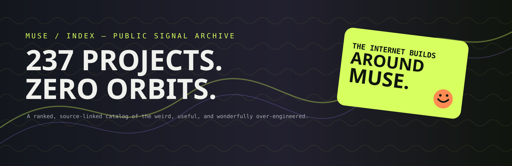

Curated GitHub intelligence · refreshed daily
Find the projects
building around Muse.
A living, source-linked index of public repositories connected to Meta’s personal AI agent. Ranked by stars, filtered by signal.
 the signal gremlin
the signal gremlinfound 237 repos

See the full promotion kit ↗01 / The index
Every project. One signal.
| Rank | Repository | Stars | Forks | Language | Signal |
|---|
02 / A closer signal
Git-FED’s top 10.
78 projects in the main index carry the Git-FED mark. These are the highest-ranked.
03 / The filter
What counts as
Muse AI?
The repo’s name, description, or topics must show it is about Meta’s Muse: muse.ai, Meta Muse, the Muse AI agent, or Hatch.
We deliberately exclude name collisions—MuseAI roleplay apps, music, trading, hashing, the Muse EEG headband, Unity Muse, museum wordplay—and alternatives that only position themselves against Muse.
Read the complete methodology ↗237public projects
in the current index01×GitHub Action
runs every day
in the current index01×GitHub Action
runs every day